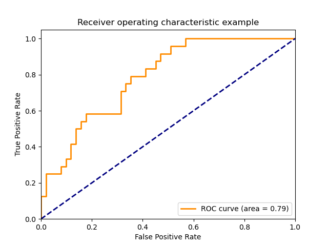
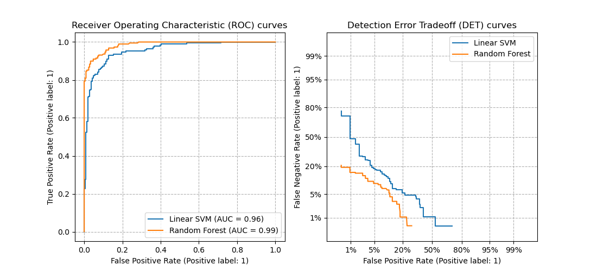

3.3. Métricas y puntuación: cuantificar la calidad de las predicciones¶
Hay 3 APIs diferentes para evaluar la calidad de las predicciones de un modelo:
Método de puntuación de los estimadores: Los estimadores tienen un método de
scoreque proporciona un criterio de evaluación predeterminada para el problema que están diseñados para resolver. Esto no se discute en esta página, sino en la documentación de cada estimador.Parámetro de puntuación: Las herramientas de evaluación de modelos que utilizan validación cruzada (como
model_selection.cross_val_scoreymodel_selection.GridSearchCV) dependen de una estrategia interna de puntuación. Esto se discute en la sección El parámetro scoring: definir las reglas de evaluación del modelo.Funciones métricas: El módulo
sklearn.metricsimplementa funciones que evalúan el error de predicción con fines específicos. Estas métricas se detallan en las secciones de Métricas de clasificación, Métricas de clasificación multietiqueta, Métricas de Regresión y Métricas de agrupamiento.
Finalmente, Estimadores de prueba son útiles para obtener un valor de referencia de esas métricas para predicciones aleatorias.
Ver también
Para las métricas «por pares», entre muestras y no estimadores o predicciones, ver la sección Métricas por pares, afinidades y núcleos.
3.3.1. El parámetro scoring: definir las reglas de evaluación del modelo¶
La selección y evaluación de modelos mediante herramientas, como model_selection.GridSearchCV y model_selection.cross_val_score, toman un parámetro scoring que controla qué métrica aplican a los estimadores evaluados.
3.3.1.1. Casos comunes: valores predefinidos¶
Para los casos de uso más comunes, puede designar un objeto puntuador con el parámetro puntuación; la tabla siguiente muestra todos los valores posibles. Todos los objetos calificadores siguen la convención de que los valores de retorno más altos son mejores que los valores de retorno más bajos. Así, las métricas que miden la distancia entre el modelo y los datos, como metrics.mean_squared_error, están disponibles como neg_mean_squared_error que devuelve el valor negado de la métrica.
Puntuación |
Función |
Comentario |
|---|---|---|
Clasificación |
||
“accuracy” |
||
“balanced_accuracy” |
||
“top_k_accuracy” |
||
“average_precision” |
||
“neg_brier_score” |
||
“f1” |
para objetivos binarios |
|
“f1_micro” |
micro-promedio |
|
“f1_macro” |
micro-promedio |
|
“f1_weighted” |
promedio ponderado |
|
“f1_samples” |
por muestra multietiqueta |
|
“neg_log_loss” |
requiere soporte |
|
“precisión”, etc. |
los sufijos se aplican como con “f1” |
|
“recuperación” etc. |
los sufijos se aplican como con “f1” |
|
“jaccard” etc. |
los sufijos se aplican como con “f1” |
|
“roc_auc” |
||
“roc_auc_ovr” |
||
“roc_auc_ovo” |
||
“roc_auc_ovr_weighted” |
||
“roc_auc_ovo_weighted” |
||
Análisis de conglomerados |
||
“adjusted_mutual_info_score” |
||
“adjusted_rand_score” |
||
“completeness_score” |
||
“fowlkes_mallows_score” |
||
“homogeneity_score” |
||
“mutual_info_score” |
||
“normalized_mutual_info_score” |
||
“rand_score” |
||
“v_measure_score” |
||
Regresión |
||
“explained_variance” |
||
“max_error” |
||
“neg_mean_absolute_error” |
||
“neg_mean_squared_error” |
||
“neg_root_mean_squared_error” |
||
“neg_mean_squared_log_error” |
||
“neg_median_absolute_error” |
||
“r2” |
||
“neg_mean_poisson_deviance” |
||
“neg_mean_gamma_deviance” |
||
“neg_mean_absolute_percentage_error” |
Ejemplos de uso:
>>> from sklearn import svm, datasets
>>> from sklearn.model_selection import cross_val_score
>>> X, y = datasets.load_iris(return_X_y=True)
>>> clf = svm.SVC(random_state=0)
>>> cross_val_score(clf, X, y, cv=5, scoring='recall_macro')
array([0.96..., 0.96..., 0.96..., 0.93..., 1. ])
>>> model = svm.SVC()
>>> cross_val_score(model, X, y, cv=5, scoring='wrong_choice')
Traceback (most recent call last):
ValueError: 'wrong_choice' is not a valid scoring value. Use sorted(sklearn.metrics.SCORERS.keys()) to get valid options.
Nota
Los valores listados por la excepción ValueError corresponden a las funciones que miden la precisión de la predicción descritas en las siguientes secciones. Los objetos de puntuación para esas funciones se almacenan en el diccionario sklearn.metrics.SCORERS.
3.3.1.2. Definir tu estrategia de puntuación a partir de funciones métricas¶
El módulo sklearn.metrics también expone un conjunto de funciones simples que miden un error de predicción dado basado en evidencia y predicción:
las funciones que terminan con
_scoredevuelven un valor a maximizar, cuanto más alto mejor.las funciones que terminan con
_erroro_lossdevuelven un valor a minimizar, cuanto más bajo mejor. Cuando se convierta en un objeto anotador usandomake_scorer, establece el parámetromayor_es_mejoraFalse(Truepor defecto; ver la descripción del parámetro más abajo).
Las métricas disponibles para diversas tareas de aprendizaje automático se detallan en las secciones siguientes.
Muchas métricas no reciben nombres para ser utilizadas como valores de puntuación, a veces porque requieren parámetros adicionales, como fbeta_score. En estos casos, es necesario generar un objeto de puntuación apropiado. La forma más sencilla de generar un objeto de llamada para la puntuación es utilizando make_scorer. Esta función convierte las métricas en objetos llamables que pueden utilizarse para la evaluación del modelo.
Un caso de uso típico es envolver una función métrica existente de la biblioteca con valores no predeterminados para sus parámetros, como el parámetro beta para la función fbeta_score:
>>> from sklearn.metrics import fbeta_score, make_scorer
>>> ftwo_scorer = make_scorer(fbeta_score, beta=2)
>>> from sklearn.model_selection import GridSearchCV
>>> from sklearn.svm import LinearSVC
>>> grid = GridSearchCV(LinearSVC(), param_grid={'C': [1, 10]},
... scoring=ftwo_scorer, cv=5)
El segundo caso de uso es construir un objeto de puntuación completamente personalizado a partir de una simple función de python utilizando make_scorer, que puede tomar varios parámetros:
la función de python que desea utilizar (
mi_pérdida_personalizada_funcen el ejemplo siguiente)si la función python devuelve una puntuación (
greater_is_better=Verdadero, por defecto) o una pérdida (greater_is_better=Falso). Si se trata de una pérdida, la salida de la función python es negada por el objeto de puntuación, conforme a la convención de validación cruzada de que las puntuaciones devuelven valores más altos para los mejores modelos.sólo para las métricas de clasificación: si la función python proporcionada requiere certezas de decisión continuas (
needs_threshold=True). El valor predeterminado es False.cualquier parámetro adicional, como
betaolabelsenf1_score.
Aquí hay un ejemplo de construcción de marcadores personalizados, y del uso del parámetro greater_is_better:
>>> import numpy as np
>>> def my_custom_loss_func(y_true, y_pred):
... diff = np.abs(y_true - y_pred).max()
... return np.log1p(diff)
...
>>> # score will negate the return value of my_custom_loss_func,
>>> # which will be np.log(2), 0.693, given the values for X
>>> # and y defined below.
>>> score = make_scorer(my_custom_loss_func, greater_is_better=False)
>>> X = [[1], [1]]
>>> y = [0, 1]
>>> from sklearn.dummy import DummyClassifier
>>> clf = DummyClassifier(strategy='most_frequent', random_state=0)
>>> clf = clf.fit(X, y)
>>> my_custom_loss_func(y, clf.predict(X))
0.69...
>>> score(clf, X, y)
-0.69...
3.3.1.3. Implementando tu propio objeto de puntuación¶
Puedes generar modelos de puntuación aún más flexibles construyendo tu propio objeto de puntuación desde cero, sin utilizar la fábrica make_scorer. Para que una llamada sea un puntuador, debe cumplir el protocolo especificado por las dos reglas siguientes:
Se puede llamar con los parámetros
(estimador, X, y), dondeestimatores el modelo que debe ser evaluado,Xson los datos de validación, yyes el objetivo basado en evidencia paraX(en el caso supervisado) oNone(en el caso no supervisado).Devuelve un número de punto flotante que cuantifica la calidad de la predicción del
estimatorenX, con referencia ay. De nuevo, por convención los números más altos son mejores, así que si su estimador devuelve una pérdida, ese valor debe ser negado.
Nota
Usando puntuaciones personalizadas en funciones donde n_jobs > 1
Aunque la definición de la función de puntuación personalizada junto con la función de llamada debería funcionar de forma inmediata con el backend de joblib por defecto (loky), importarla desde otro módulo será un enfoque más robusto y funcionará independientemente del backend de joblib.
Por ejemplo, para usar n_jobs mayor que 1 en el ejemplo de abajo, la función custom_scoring_function se guarda en un módulo creado por el usuario (custom_scorer_module.py) e importado:
>>> from custom_scorer_module import custom_scoring_function
>>> cross_val_score(model,
... X_train,
... y_train,
... scoring=make_scorer(custom_scoring_function, greater_is_better=False),
... cv=5,
... n_jobs=-1)
3.3.1.4. Utilizando evaluación métrica múltiple¶
Scikit-learn también permite la evaluación de múltiples métricas en GridSearchCV, RandomizedSearchCV` y ``cross_validate.
Hay tres maneras de especificar múltiples métricas de puntuación para el parámetro scoring:
- Como un iterable de métricas de cadena:
>>> scoring = ['accuracy', 'precision']
- Como un
dictque mapea el nombre del puntuador a la función de puntuación: >>> from sklearn.metrics import accuracy_score >>> from sklearn.metrics import make_scorer >>> scoring = {'accuracy': make_scorer(accuracy_score), ... 'prec': 'precision'}
Ten en cuenta que los valores del dict pueden ser funciones de puntuación o una de las cadenas métricas predefinidas.
- Como un
Como un invocable que devuelve un diccionario de puntuaciones:
>>> from sklearn.model_selection import cross_validate >>> from sklearn.metrics import confusion_matrix >>> # A sample toy binary classification dataset >>> X, y = datasets.make_classification(n_classes=2, random_state=0) >>> svm = LinearSVC(random_state=0) >>> def confusion_matrix_scorer(clf, X, y): ... y_pred = clf.predict(X) ... cm = confusion_matrix(y, y_pred) ... return {'tn': cm[0, 0], 'fp': cm[0, 1], ... 'fn': cm[1, 0], 'tp': cm[1, 1]} >>> cv_results = cross_validate(svm, X, y, cv=5, ... scoring=confusion_matrix_scorer) >>> # Getting the test set true positive scores >>> print(cv_results['test_tp']) [10 9 8 7 8] >>> # Getting the test set false negative scores >>> print(cv_results['test_fn']) [0 1 2 3 2]
3.3.2. Métricas de clasificación¶
El módulo sklearn.metrics implementa varias funciones de pérdida, puntuación y utilidad para medir el rendimiento de la clasificación. Algunas métricas pueden requerir estimaciones de probabilidad de la clase positiva, valores de confianza o valores de decisiones binarias. La mayoría de las implementaciones permiten que cada muestra proporcione una contribución ponderada a la puntuación global, a través del parámetro sample_weight.
Algunos de estos están restringidos al caso de clasificación binaria:
Calcula los pares de precisión-recuerdo para diferentes umbrales de probabilidad. |
|
Calcula la característica operativa del receptor (ROC). |
|
Calcula las tasas de error para diferentes umbrales de probabilidad. |
Otros también trabajan en el caso multiclase:
Calcula la precisión balanceada. |
|
Kappa de Cohen: estadística que mide el acuerdo entre anotadores. |
|
Calcula la matriz de confusión para evaluar la precisión de una clasificación. |
|
Pérdida media de la bisagra (no regularizada). |
|
Calcula el coeficiente de correlación Matthews (CMC). |
|
Calcula el Área Bajo la Curva Característica Operativa del Receptor (ROC AUC) a partir de las puntuaciones de predicción. |
|
Puntuación de la clasificación de precisión Top-k. |
Algunos también trabajan en el caso multietiquetas:
Puntuación de la clasificación de precisión. |
|
Construye un informe de texto que muestre las principales métricas de clasificación. |
|
Calcula la puntuación F1, también conocida como puntuación F equilibrada o medición F. |
|
Calcula la puntuación F-beta. |
|
Calcula la pérdida media de Hamming. |
|
Puntuación del coeficiente de similitud de Jaccard. |
|
Pérdida logarítmica, también conocida como pérdida logística o pérdida de entropía cruzada. |
|
Calcula una matriz de confusión para cada clase o muestra. |
|
Calcula precisión, recuerda, la medición F y soporte para cada clase. |
|
Calcula la precisión. |
|
Calcula la recuperación. |
|
Calcula el Área Bajo la Curva Característica Operativa del Receptor (ROC AUC) a partir de las puntuaciones de predicción. |
|
Pérdida de clasificación cero a uno. |
Y algunos trabajan con problemas binarios y multietiquetas (pero no multiclase):
Calcula la precisión media (AP) de los puntajes de predicción. |
En las siguientes subsecciones, describiremos cada una de esas funciones, precedidas de algunas notas sobre la API común y la definición métrica.
3.3.2.1. De binario a multiclase y multietiqueta¶
Algunas métricas están esencialmente definidas para tareas de clasificación binaria (por ejemplo, f1_score, roc_auc_score). En estos casos, por defecto sólo se evalúa la etiqueta positiva, asumiendo por defecto que la clase positiva está etiquetada como 1 (aunque esto puede ser configurable a través del parámetro pos_label).
Al extender una métrica binaria a problemas multiclase o multietiqueta, los datos se tratan como una colección de problemas binarios, uno por cada clase. Hay entonces un número de maneras de promediar los cálculos de la métrica binaria a través del conjunto de clases, cada una de las cuales puede ser útil en algún escenario. Cuando esté disponible, deberás seleccionar entre ellas utilizando el parámetro average.
"macro"simplemente calcula la media de las métricas binarias, dando la misma ponderación a cada clase. En los problemas en los que las clases poco frecuentes son, sin embargo, importantes, el macro-promedio puede ser un medio para destacar su rendimiento. Por otro lado, la suposición de que todas las clases son igual de importantes es a menudo falsa, de modo que el macro-promedio enfatizará en exceso el rendimiento típicamente bajo de una clase poco frecuente."weighted"tiene en cuenta el desequilibrio de clases calculando la media de las métricas binarias en las que la puntuación de cada clase está ponderada por su presencia en la muestra de datos reales."micro"da a cada par de clase muestra una contribución igual a la métrica global (excepto como resultado de la ponderación de la muestra). En lugar de sumar la métrica por clase, se suman los dividendos y divisores que componen las métricas por clase para calcular un cociente global. El micropromedio puede ser preferible en entornos de etiquetas múltiples, incluida la clasificación multiclase en la que se debe ignorar una clase mayoritaria."samples"aplican sólo a los problemas multietiqueta. No calcula una medida por clase, sino que calcula la métrica sobre las clases verdaderas y predichas para cada muestra en los datos de evaluación, y devuelve su promedio (sample_weightponderada).Al seleccionar
average=Nonese devolverá una matriz con la puntuación para cada clase.
Mientras que los datos de multiclase se proporcionan a la métrica, como objetivos binarios, como una matriz de etiquetas de clase, los datos multietiquetas se especifican como una matriz de indicadores, en la que la celda [i, j] tiene valor 1 si la muestra i tiene la etiqueta j y valor 0 de lo contrario.
3.3.2.2. Puntuación de precisión¶
La función accuracy_score calcula la precisión, ya sea la fracción (predeterminado) o el contador (normalize=False) de predicciones correctas.
En la clasificación multietiqueta, la función devuelve la precisión del subconjunto. Si todo el conjunto de etiquetas predecidas para una muestra coincide estrictamente con el conjunto verdadero de etiquetas, entonces la precisión del subconjunto es 1.0; de lo contrario es 0.0.
Si \(\hat{y}_i\) es el valor predicho de la muestra \(i\)-ésima y \(y_i\) es el valor verdadero correspondiente, entonces la fracción de predicciones correctas sobre \(n_\text{samples}\) se define como
donde \(1(x)\) es la función indicadora.
>>> import numpy as np
>>> from sklearn.metrics import accuracy_score
>>> y_pred = [0, 2, 1, 3]
>>> y_true = [0, 1, 2, 3]
>>> accuracy_score(y_true, y_pred)
0.5
>>> accuracy_score(y_true, y_pred, normalize=False)
2
En el caso multietiqueta con indicadores de etiqueta binaria:
>>> accuracy_score(np.array([[0, 1], [1, 1]]), np.ones((2, 2)))
0.5
Example:
Ver Evalúa con permutaciones la importancia de una puntuación de clasificación para un ejemplo de uso de puntuación de precisión usando permutaciones del conjunto de datos.
3.3.2.3. Puntuación de precisión de Top-k¶
La función top_k_accuracy_score es una generalización de accuracy_score. La diferencia es que una predicción se considera correcta siempre y cuando la etiqueta verdadera esté asociada con uno de los puntajes predecidos más altos k. accuracy_score es el caso especial de k = 1.
La función abarca los casos de clasificación binaria y multiclase, pero no el caso multietiqueta.
Si \(\hat{f}_{i,j}\) es la clase predecida para la \(i\)-ésima muestra correspondiente a la \(j\)-th mayor puntuación predicha y \(y_i\) es el valor verdadero correspondiente, entonces la fracción de predicciones correctas sobre \(n_\text{samples}\) se define como
donde \(k\) es el número de suposiciones permitidas y \(1(x)\) es la función indicador.
>>> import numpy as np
>>> from sklearn.metrics import top_k_accuracy_score
>>> y_true = np.array([0, 1, 2, 2])
>>> y_score = np.array([[0.5, 0.2, 0.2],
... [0.3, 0.4, 0.2],
... [0.2, 0.4, 0.3],
... [0.7, 0.2, 0.1]])
>>> top_k_accuracy_score(y_true, y_score, k=2)
0.75
>>> # Not normalizing gives the number of "correctly" classified samples
>>> top_k_accuracy_score(y_true, y_score, k=2, normalize=False)
3
3.3.2.4. Puntuación de precisión balanceada¶
La función balanced_accuracy_score calcula la precisión balanceada, que evita las estimaciones de rendimiento infladas en conjuntos de datos desbalanceados. Se trata del macropromedio de las puntuaciones de recuperación por clase o, de forma equivalente, de la precisión bruta, en la que cada muestra se pondera según la prevalencia inversa de su clase verdadera. Así, para los conjuntos de datos equilibrados, la puntuación es igual a la precisión.
En el caso binario la precisión balanceada es igual a la media aritmética de sensibilidad (verdadero tipo positivo) y especificidad (tasa verdadera negativa), o el área debajo de la curva ROC con predicciones binarias en lugar de puntuaciones:
Si el clasificador funciona igual de bien en ambas clases, este término se reduce a la precisión convencional (es decir, el número de predicciones correctas dividido por el número total de predicciones).
En contraste, si la precisión convencional está por encima de la posibilidad sólo porque el clasificador se aprovecha de un conjunto de pruebas desequilibrado entonces la precisión balanceada, según corresponda, caerá a \(\frac{1}{n\_classes}\).
La puntuación oscila entre 0 y 1, o cuando se utiliza adjusted=True. se reescaló al rango \(\frac{1}{1 - n\_classes}\) a 1, inclusive, con rendimiento a puntuación aleatoria 0.
Si \(y_i\) es el valor verdadero de la muestra i-ésima de :math:, y \(w_i\) es la ponderación de muestra correspondiente, luego ajustamos la ponderación de la muestra a:
donde \(1(x)\) es la función indicadora. Dado que se predice \(\hat{y}_i\) para la muestra \(i\), la precisión equilibrada se define como:
Con adjusted=True, la precisión balanceada reporta el aumento relativo de \(\texttt{balanced-accuracy}(y, \mathbf{0}, w) = \frac{1}{n\_classes}\). En el caso binario, esto también se conoce como *estadísticas de J de Youden*, o informado.
Nota
La definición de múltiples clases parece la extensión más razonable de la métrica utilizada en la clasificación binaria, aunque no existe un consenso seguro en la literatura:
Nuestra definición: [Mosley2013], [Kelleher2015] y [Guyon2015], donde [Guyon2015] adopta la versión ajustada para asegurar que las predicciones aleatorias tengan una puntuación de \(0\) y las predicciones perfectas tienen una puntuación de \(1\)..
Precisión balanceada de la clase como se describe en [Mosley2013]: se calcula el mínimo entre la precisión y el recordatorio para cada clase. Esos valores son entonces promediados sobre el número total de clases para obtener la precisión balanceada.
Precisión balanceada como se describe en [Urbanowicz2015]: el promedio de sensibilidad y especificidad se calcula para cada clase y luego se promedia sobre el número total de clases.
Referencias:
- Guyon2015(1,2)
I. Guyon, K. Bennett, G. Cawley, H.J. Escalante, S. Escalera, T.K. Ho, N. Macià, B. Ray, M. Saeed, A.R. Statnikov, E. Viegas, Design of the 2015 ChaLearn AutoML Challenge, IJCNN 2015.
- Mosley2013(1,2)
L. Mosley, A balanced approach to the multi-class imbalance problem, IJCV 2010.
- Kelleher2015
John. D. Kelleher, Brian Mac Namee, Aoife D’Arcy, Fundamentals of Machine Learning for Predictive Data Analytics: Algorithms, Worked Examples, and Case Studies, 2015.
- Urbanowicz2015
Urbanowicz R.J., Moore, J.H. ExSTraCS 2.0: description and evaluation of a scalable learning classifier system, Evol. Intel. (2015) 8: 89.
3.3.2.5. Kappa de Cohen¶
La función cohen_kappa_score calcula la estadística Cohen’s kappa. Esta medida está pensada para comparar etiquetados por diferentes anotadores humanos, no un clasificador frente a uno basado en evidencia.
La puntuación de kappa (ver cadena de documentación) es un número entre -1 y 1. Las puntuaciones sobre .8 se consideran generalmente como un buen acuerdo; cero o menor significa ningún acuerdo (etiquetas prácticamente aleatorias).
Las puntuaciones de Kappa pueden ser calculadas para problemas binarios o multiclase, pero no para problemas multietiqueta (excepto calculando manualmente un puntaje por etiqueta) y no para más de dos anotadores.
>>> from sklearn.metrics import cohen_kappa_score
>>> y_true = [2, 0, 2, 2, 0, 1]
>>> y_pred = [0, 0, 2, 2, 0, 2]
>>> cohen_kappa_score(y_true, y_pred)
0.4285714285714286
3.3.2.6. Matriz de confusión¶
La función confusion_matrix evalúa la precisión de la clasificación calculando la matriz de confusión con cada fila correspondiente a la clase verdadera (Wikipedia y otras referencias pueden utilizar una convención diferente para los ejes).
Por definición, la entrada \(i, j\) en una matriz de confusión es el número de observaciones en el grupo \(i\), pero se espera que esté en el grupo \(j\). Aquí hay un ejemplo:
>>> from sklearn.metrics import confusion_matrix
>>> y_true = [2, 0, 2, 2, 0, 1]
>>> y_pred = [0, 0, 2, 2, 0, 2]
>>> confusion_matrix(y_true, y_pred)
array([[2, 0, 0],
[0, 0, 1],
[1, 0, 2]])
plot_confusion_matrix puede ser usado para representar visualmente una matriz de confusión como se muestra en el ejemplo Matriz de confusión que crea la siguiente figura:
El parámetro normalize permite informar de tasas en lugar de recuentos. La matriz de confusión puede ser normalizada de 3 maneras diferentes: 'pred', 'true', y 'all' que dividirá los recuentos por la suma de cada columna, fila o la matriz completa, respectivamente.
>>> y_true = [0, 0, 0, 1, 1, 1, 1, 1]
>>> y_pred = [0, 1, 0, 1, 0, 1, 0, 1]
>>> confusion_matrix(y_true, y_pred, normalize='all')
array([[0.25 , 0.125],
[0.25 , 0.375]])
Para problemas binarios, podemos obtener cuentas de verdaderos negativos, falsos positivos, falsos negativos y verdaderos positivos como sigue:
>>> y_true = [0, 0, 0, 1, 1, 1, 1, 1]
>>> y_pred = [0, 1, 0, 1, 0, 1, 0, 1]
>>> tn, fp, fn, tp = confusion_matrix(y_true, y_pred).ravel()
>>> tn, fp, fn, tp
(2, 1, 2, 3)
Example:
Ver Matriz de confusión para un ejemplo de uso de una matriz de confusión para evaluar la calidad de salida del clasificador.
Ver Reconocimiento de dígitos escritos a mano para un ejemplo de uso de una matriz de confusión para clasificar dígitos escritos a mano.
Ver Clasificación de documentos de texto utilizando características dispersas para un ejemplo de uso de una matriz de confusión para clasificar documentos de texto.
3.3.2.7. Reporte de clasificación¶
La función classification_report construye un reporte de texto que muestra las principales métricas de clasificación. Aquí hay un pequeño ejemplo con target_names personalizados y etiquetas inferidas:
>>> from sklearn.metrics import classification_report
>>> y_true = [0, 1, 2, 2, 0]
>>> y_pred = [0, 0, 2, 1, 0]
>>> target_names = ['class 0', 'class 1', 'class 2']
>>> print(classification_report(y_true, y_pred, target_names=target_names))
precision recall f1-score support
class 0 0.67 1.00 0.80 2
class 1 0.00 0.00 0.00 1
class 2 1.00 0.50 0.67 2
accuracy 0.60 5
macro avg 0.56 0.50 0.49 5
weighted avg 0.67 0.60 0.59 5
Example:
Ver Reconocimiento de dígitos escritos a mano para un ejemplo de uso del informe de clasificación para dígitos escritos a mano.
Ver Clasificación de documentos de texto utilizando características dispersas para un ejemplo de uso del informe de clasificación para documentos de texto.
Ver Estimación de parámetros utilizando la búsqueda en cuadrícula con validación cruzada para ver un ejemplo de uso del informe de clasificación para la búsqueda en cuadrícula con validación cruzada anidada.
3.3.2.8. Pérdida de Hamming¶
El hamming_loss calcula la pérdida media de Hamming o distancia Hamming entre dos conjuntos de muestras.
Si \(hat{y}_j\) es el valor predicho para la \(j\)-ésima etiqueta de una muestra dada, \(y_j\) es el valor verdadero correspondiente, y \(n_\text{labels}\) es el número de clases o etiquetas, entonces la pérdida de Hamming \(L_{Hamming}\) entre dos muestras se define como:
donde \(1(x)\) es la función indicadora.
>>> from sklearn.metrics import hamming_loss
>>> y_pred = [1, 2, 3, 4]
>>> y_true = [2, 2, 3, 4]
>>> hamming_loss(y_true, y_pred)
0.25
En el caso multietiqueta con indicadores de etiqueta binaria:
>>> hamming_loss(np.array([[0, 1], [1, 1]]), np.zeros((2, 2)))
0.75
Nota
En la clasificación multiclase, la pérdida Hamming corresponde a la distancia Hamming entre y_true y y_pred, que es similar a la función Pérdida cero uno. Sin embargo, mientras que la pérdida cero a uno penaliza los conjuntos de predicción que no coinciden estrictamente con los conjuntos verdaderos, la pérdida Hamming penaliza las etiquetas individuales. Por lo tanto, la pérdida de Hamming, limitada por la pérdida de cero a uno, está siempre entre cero y uno, inclusive; y la predicción de un subconjunto o superconjunto adecuado de las etiquetas verdaderas dará una pérdida de Hamming entre cero y uno, exclusivamente.
3.3.2.9. Precisión, recuperación y medidas F¶
Intuitivamente, la precisión es la capacidad del clasificador de no etiquetar como positiva una muestra que es negativa, y la recuperación es la capacidad del clasificador de encontrar todas las muestras positivas.
La medida F (medidas \(F_\beta\) y \(F_1\)) puede interpretarse como una media armónica ponderada de la precisión y la recuperación. Una medida \(F_\beta\) alcanza su mejor valor en 1 y su peor puntuación en 0. Con \(\beta = 1\), \(F_\beta\) y \(F_1\) son equivalentes, y el recuerdo y la precisión son igualmente importantes.
La función precision_recall_curve calcula una curva de recuperación de precisión a partir de la etiqueta basada en evidencia y una puntuación dada por el clasificador variando un umbral de decisión.
La función average_precision_score calcula la precisión promedio (AP) a partir de las puntuaciones de las predicciones. El valor está entre 0 y 1 y cuanto más alto mejor. La AP se define como
donde \(P_n\) y \(R_n\) son la precisión y recuperación en el n-ésimo umbral. Con predicciones aleatorias, el AP es la fracción de muestras positivas.
Las referencias [Manning2008] y [Everingham2010] presentan variantes alternativas de AP que interpolan la curva de recuperación de precisión. Actualmente, average_precision_score no implementa ninguna variante interpolada. Las referencias [Davis2006] y [Flach2015] describen por qué una interpolación lineal de puntos en la curva de recuperación de precisión proporciona una medida excesivamente optimista del rendimiento del clasificador. Esta interpolación lineal se utiliza al calcular el área bajo la curva con la regla trapezoidal en auc.
Varias funciones te permiten analizar la puntuación de precisión, recuperación y mediciones F:
Calcula la precisión media (AP) de los puntajes de predicción. |
|
Calcula la puntuación F1, también conocida como puntuación F equilibrada o medición F. |
|
Calcula la puntuación F-beta. |
|
Calcula los pares de precisión-recuerdo para diferentes umbrales de probabilidad. |
|
Calcula precisión, recuerda, la medición F y soporte para cada clase. |
|
Calcula la precisión. |
|
Calcula la recuperación. |
Ten en cuenta que la función precision_recall_curve está restringida al caso binario. La función average_precision_score sólo funciona en la clasificación binaria y en el formato de indicador multietiqueta. La función plot_precision_recall_curve traza la precisión de recuperación de la siguiente manera.
Ejemplos:
Ver Clasificación de documentos de texto utilizando características dispersas para un ejemplo de uso de
f1_scorepara clasificar documentos de texto.Ver Estimación de parámetros utilizando la búsqueda en cuadrícula con validación cruzada para un ejemplo de uso de
precision_scoreyrecall_scorepara estimar parámetros utilizando la búsqueda en la cuadrícula con validación cruzada anidada.Ver Precisión-Exhaustividad para un ejemplo de uso de
precision_recall_curvepara evaluar la calidad de la salida del clasificador.
Referencias:
- Manning2008
C.D. Manning, P. Raghavan, H. Schütze, Introduction to Information Retrieval, 2008.
- Everingham2010
M. Everingham, L. Van Gool, C.K.I. Williams, J. Winn, A. Zisserman, The Pascal Visual Object Classes (VOC) Challenge, IJCV 2010.
- Davis2006
J. Davis, M. Goadrich, The Relationship Between Precision-Recall and ROC Curves, ICML 2006.
- Flach2015
P.A. Flach, M. Kull, Precision-Recall-Gain Curves: PR Analysis Done Right, NIPS 2015.
3.3.2.9.1. Clasificación binaria¶
En una tarea de clasificación binaria, los términos “”positivo”” y “”negativo”” se refieren a la predicción del clasificador, y los términos “”verdadero”” y “”falso”” se refieren a si esa predicción corresponde al juicio externo (a veces conocido como “”observación””). Dadas estas definiciones, podemos formular la siguiente tabla:
Clase real (observación) |
||
Clase predicha (expectativa) |
tp (verdadero positivo) Resultado correcto |
fp (falso positivo) Resultado inesperado |
fn (falso negativo) Resultado ausente |
tn (verdadero negativo) Ausencia correcta de resultado |
|
En este contexto, podemos definir las nociones de precisión, recuperación y medidas F:
Aquí hay algunos ejemplos pequeños en clasificación binaria:
>>> from sklearn import metrics
>>> y_pred = [0, 1, 0, 0]
>>> y_true = [0, 1, 0, 1]
>>> metrics.precision_score(y_true, y_pred)
1.0
>>> metrics.recall_score(y_true, y_pred)
0.5
>>> metrics.f1_score(y_true, y_pred)
0.66...
>>> metrics.fbeta_score(y_true, y_pred, beta=0.5)
0.83...
>>> metrics.fbeta_score(y_true, y_pred, beta=1)
0.66...
>>> metrics.fbeta_score(y_true, y_pred, beta=2)
0.55...
>>> metrics.precision_recall_fscore_support(y_true, y_pred, beta=0.5)
(array([0.66..., 1. ]), array([1. , 0.5]), array([0.71..., 0.83...]), array([2, 2]))
>>> import numpy as np
>>> from sklearn.metrics import precision_recall_curve
>>> from sklearn.metrics import average_precision_score
>>> y_true = np.array([0, 0, 1, 1])
>>> y_scores = np.array([0.1, 0.4, 0.35, 0.8])
>>> precision, recall, threshold = precision_recall_curve(y_true, y_scores)
>>> precision
array([0.66..., 0.5 , 1. , 1. ])
>>> recall
array([1. , 0.5, 0.5, 0. ])
>>> threshold
array([0.35, 0.4 , 0.8 ])
>>> average_precision_score(y_true, y_scores)
0.83...
3.3.2.9.2. Clasificación multiclase y multietiqueta¶
En las tareas de clasificación multiclase y multietiqueta, las nociones de precisión, recuperación y medidas F pueden aplicarse a cada etiqueta de forma independiente. Hay algunas formas de combinar los resultados entre las etiquetas, especificadas por el argumento average de average_precision_score (sólo multietiqueta), f1_score, fbeta_score, precision_recall_fscore_support, precision_score y recall_score, como se describe arriba. Ten en cuenta que si se incluyen todas las etiquetas, el promedio «micro» en un entorno multiclase producirá precisión, recuperación y \(F\) que son idénticos a la precisión. También ten en cuenta que el promedio «ponderado» puede producir una puntuación F que no está entre la precisión y la recuperación.
Para hacer esto más explícito, considere la siguiente notación:
\(y\) el conjunto de pares predichos \((sample, label)\)
\(hat{y}\) el conjunto de pares true \((sample, label)\)
\(L\) el conjunto de etiquetas
\(S\) el conjunto de muestras
\(y_s\) el subconjunto de \(y\) con la muestra \(s\), es decir, \(y_s := \left\{(s', l) \in y | s' = s\right\}\)
\(y_l\) el subconjunto de \(y\) con la etiqueta \(l\)
similarmente, \(\hat{y}_s\) y \(\hat{y}_l\) son subconjuntos de \(\hat{y}\)
\(P(A, B) := \frac{\left| Un \cap B \right|}{\left|A\right|}\) para algunos conjuntos \(A\) y \(B\)
\(R(A, B) := \frac{\left| A \cap B \right|}{\left|B\right|}\) (Las convenciones varían en el manejo \(B = \emptyset\); esta implementación usa \(R(A, B):=0\), y similar para \(P\).)
\(F_\beta(A, B) := \left(1 + \beta^2\right) \frac{P(A, B) \times R(A, B)}{\beta^2 P(A, B) + R(A, B)}\)
Luego las métricas se definen como:
|
Precisión |
Recuperación |
F_beta |
|---|---|---|---|
|
\(P(y, \hat{y})\) |
\(R(y, \hat{y})\) |
\(F_\beta(y, \hat{y})\) |
|
\(\frac{1}{\left|S\right|} \sum_{s \in S} P(y_s, \hat{y}_s)\) |
\(\frac{1}{\left|S\right|} \sum_{s \in S} R(y_s, \hat{y}_s)\) |
\(\frac{1}{\left|S\right|} \sum_{s \in S} F_\beta(y_s, \hat{y}_s)\) |
|
\(\frac{1}{\left|L\right|} \sum_{l \in L} P(y_l, \hat{y}_l)\) |
\(\frac{1}{\left|L\right|} \sum_{l \in L} R(y_l, \hat{y}_l)\) |
\(\frac{1}{\left|L\right|} \sum_{l \in L} F_\beta(y_l, \hat{y}_l)\) |
|
\(\frac{1}{\sum_{l \in L} \left|\hat{y}_l\right|} \sum_{l \in L} \left|\hat{y}_l\right| P(y_l, \hat{y}_l)\) |
\(\frac{1}{\sum_{l \in L} \left|\hat{y}_l\right|} \sum_{l \in L} \left|\hat{y}_l\right| R(y_l, \hat{y}_l)\) |
\(\frac{1}{\sum_{l \in L} \left|\hat{y}_l\right|} \sum_{l \in L} \left|\hat{y}_l\right| F_\beta(y_l, \hat{y}_l)\) |
|
\(\langle P(y_l, \hat{y}_l) | l \in L \rangle\) |
\(\langle R(y_l, \hat{y}_l) | l \in L \rangle\) |
\(\langle F_\beta(y_l, \hat{y}_l) | l \in L \rangle\) |
>>> from sklearn import metrics
>>> y_true = [0, 1, 2, 0, 1, 2]
>>> y_pred = [0, 2, 1, 0, 0, 1]
>>> metrics.precision_score(y_true, y_pred, average='macro')
0.22...
>>> metrics.recall_score(y_true, y_pred, average='micro')
0.33...
>>> metrics.f1_score(y_true, y_pred, average='weighted')
0.26...
>>> metrics.fbeta_score(y_true, y_pred, average='macro', beta=0.5)
0.23...
>>> metrics.precision_recall_fscore_support(y_true, y_pred, beta=0.5, average=None)
(array([0.66..., 0. , 0. ]), array([1., 0., 0.]), array([0.71..., 0. , 0. ]), array([2, 2, 2]...))
Para la clasificación multiclase con una «clase negativa», es posible excluir algunas etiquetas:
>>> metrics.recall_score(y_true, y_pred, labels=[1, 2], average='micro')
... # excluding 0, no labels were correctly recalled
0.0
De manera similar, las etiquetas que no están presentes en la muestra de datos pueden contabilizarse en la macropromedio.
>>> metrics.precision_score(y_true, y_pred, labels=[0, 1, 2, 3], average='macro')
0.166...
3.3.2.10. Puntuación del coeficiente de similitud de Jaccard¶
La función jaccard_score calcula el promedio de los coeficientes de similitud de Jaccard, también llamado índice de Jaccard, entre pares de conjuntos de etiquetas.
El coeficiente de similitud de Jaccard de las muestras \(i\)-ésimas, con un conjunto de etiquetas basada en evidencia \(y_i\) y un conjunto de etiquetas predichas \(hat{y}_i\), se define como
jaccard_score funciona como precision_recall_fscore_support como una medida ingenua de conjunto que se aplica de forma nativa a objetivos binarios, y se extiende para aplicarse a multietiquetas y multiclases mediante el uso de promedio (ver sobre).
En caso binario:
>>> import numpy as np
>>> from sklearn.metrics import jaccard_score
>>> y_true = np.array([[0, 1, 1],
... [1, 1, 0]])
>>> y_pred = np.array([[1, 1, 1],
... [1, 0, 0]])
>>> jaccard_score(y_true[0], y_pred[0])
0.6666...
En el caso multietiqueta con indicadores de etiqueta binaria:
>>> jaccard_score(y_true, y_pred, average='samples')
0.5833...
>>> jaccard_score(y_true, y_pred, average='macro')
0.6666...
>>> jaccard_score(y_true, y_pred, average=None)
array([0.5, 0.5, 1. ])
Los problemas de múltiples clases son binarizados y tratados como el correspondiente problema multietiqueta:
>>> y_pred = [0, 2, 1, 2]
>>> y_true = [0, 1, 2, 2]
>>> jaccard_score(y_true, y_pred, average=None)
array([1. , 0. , 0.33...])
>>> jaccard_score(y_true, y_pred, average='macro')
0.44...
>>> jaccard_score(y_true, y_pred, average='micro')
0.33...
3.3.2.11. Pérdida de la bisagra¶
La función hinge_loss calcula la distancia media entre el modelo y los datos utilizando la pérdida de bisagra, una métrica unilateral que sólo considera los errores de predicción. (La pérdida de bisagra se utiliza en los clasificadores de margen máximo, como las máquinas de vectores de soporte.)
Si las etiquetas están codificadas con +1 y -1, \(y\): es el valor verdadero, y \(w\) son las decisiones predichas como salida por decision_function, entonces la pérdida de la bisagra se define como:
Si hay más de dos etiquetas, hinge_loss utiliza una variante multiclase debido a Crammer & Singer. Aquí es el artículo que lo describe.
Si \(y_w\) es la decisión predicha para la etiqueta verdadera y \(y_t\) es el máximo de las decisiones predichas para todas las demás etiquetas, donde las decisiones predichas son salida por función de decisión, entonces la pérdida de bisagras multiclase es definida por:
Aquí un pequeño ejemplo que demuestra el uso de la función hinge_loss con un clasificador svm en un problema de clase binaria:
>>> from sklearn import svm
>>> from sklearn.metrics import hinge_loss
>>> X = [[0], [1]]
>>> y = [-1, 1]
>>> est = svm.LinearSVC(random_state=0)
>>> est.fit(X, y)
LinearSVC(random_state=0)
>>> pred_decision = est.decision_function([[-2], [3], [0.5]])
>>> pred_decision
array([-2.18..., 2.36..., 0.09...])
>>> hinge_loss([-1, 1, 1], pred_decision)
0.3...
Aquí hay un ejemplo demostrando el uso de la función hinge_loss con un clasificador svm en un problema de multiclase:
>>> X = np.array([[0], [1], [2], [3]])
>>> Y = np.array([0, 1, 2, 3])
>>> labels = np.array([0, 1, 2, 3])
>>> est = svm.LinearSVC()
>>> est.fit(X, Y)
LinearSVC()
>>> pred_decision = est.decision_function([[-1], [2], [3]])
>>> y_true = [0, 2, 3]
>>> hinge_loss(y_true, pred_decision, labels)
0.56...
3.3.2.12. Pérdida logística¶
La pérdida logística, también llamada pérdida de regresión logística o pérdida de entropía cruzada, se define sobre las estimaciones de probabilidad. Se utiliza habitualmente en la regresión logística (multinomial) y en las redes neuronales, así como en algunas variantes de la maximización de expectativas, y puede utilizarse para evaluar las salidas de probabilidad (predict_proba) de un clasificador en lugar de sus predicciones discretas.
Para la clasificación binaria con una etiqueta verdadera \(y \in {0,1\}\) y una estimación de probabilidad \(p = \operatorname{Pr}(y = 1)\), la pérdida logística por muestra es la log-verosimilitud negativa del clasificador dada la etiqueta verdadera:
Esto se extiende al caso multiclase, de la siguiente manera. Dejemos que las etiquetas verdaderas para un conjunto de muestras sean codificadas como una matriz de indicador binario de 1 a K \(Y\), i. ., \(y_{i,k} = 1\) si la muestra \(i\) tiene la etiqueta \(k\) tomada de un conjunto de etiquetas \(K\). Dejemos que \(P\) sea una matriz de estimaciones de probabilidad, con \(p_{i,k} = \operatorname{Pr}(y_{i,k} = 1)\). Entonces la pérdida logística de todo el conjunto es
Para ver cómo esto generaliza la pérdida logarítmica binaria dada anteriormente, observe que en el caso binario, \(p_{i,0} = 1 - p_{i,1}\) y \(y_{i,0} = 1 - y_{i,1}\), por lo que al expandir la suma interna sobre \(y_{i,k} \en {0,1\}\) da la pérdida logarítmica binaria.
La función log_loss calcula la pérdida logística dada una lista de etiquetas basadas en evidencia y una matriz de probabilidad, como devuelve el método predict_proba de un estimador.
>>> from sklearn.metrics import log_loss
>>> y_true = [0, 0, 1, 1]
>>> y_pred = [[.9, .1], [.8, .2], [.3, .7], [.01, .99]]
>>> log_loss(y_true, y_pred)
0.1738...
El primer [.9, .1] en y_pred denota una probabilidad del 90% de que la primera muestra tenga la etiqueta 0. La pérdida logística no es negativa.
3.3.2.13. Coeficiente de correlación Matthews¶
La función matthews_corrcoef calcula el coeficiente de correlación de Matthew (MCC) para clases binarias. Citando Wikipedia:
«El coeficiente de correlación Matthews se utiliza en el aprendizaje automático como medida de la calidad de las clasificaciones binarias (dos clases). Tiene en cuenta los verdaderos y falsos positivos y negativos y, en general, se considera una medida balanceada que puede utilizarse incluso si las clases son de tamaños muy diferentes. El MCC es en esencia un valor de coeficiente de correlación entre -1 y +1. Un coeficiente de +1 representa una predicción perfecta, 0 una predicción aleatoria promedio y -1 una predicción inversa. El estadístico también se conoce como el coeficiente phi.»
En el caso binario (dos clases), \(tp\), \(tn\), \(fp\) y \(fn\) son respectivamente el número de verdaderos positivos, negativos verdaderos, falsos positivos y negativos falsos, el MCC se define como
En el caso de multiclase, el coeficiente de correlación Matthews puede ser definido en términos de un confusion_matrix \(C\) para las clases \(K\). Para simplificar la definición, considere las siguientes variables intermedias:
\(t_k=\su_{i}^{K} C_{ik}\) el número de veces que la clase \(k\) realmente ha ocurrido,
\(p_k=\su_{i}^{K} C_{ki}\) se predijo el número de veces que la clase \(k\),
\(c=\su_{k}^{K} C_{kk}\) el número total de muestras predicho correctamente,
\(s=\su_{i}^{K} \su_{j}^{K} C_{ij}\) el número total de muestras.
Entonces el MCC multiclase se define como:
Cuando hay más de dos etiquetas, el valor del MCC ya no estará entre -1 y +1. En su lugar, el valor mínimo será entre -1 y 0 dependiendo del número y la distribución de las etiquetas basadas en evidencia. El valor máximo es siempre +1.
Aquí hay un pequeño ejemplo que ilustra el uso de la función matthews_corrcoef:
>>> from sklearn.metrics import matthews_corrcoef
>>> y_true = [+1, +1, +1, -1]
>>> y_pred = [+1, -1, +1, +1]
>>> matthews_corrcoef(y_true, y_pred)
-0.33...
3.3.2.14. Matriz de confusión multietiqueta¶
La función multilabel_confusion_matrix calcula la matriz de confusión multietiqueta de una clase (predeterminado) o de una muestra (samplewise=True) para evaluar la precisión de una clasificación. multilabel_confusion_matrix también trata los datos de varias clases como si fueran de varias etiquetas, ya que se trata de una transformación que se suele aplicar para evaluar problemas de varias clases con métricas de clasificación binarias (como la precisión, la recuperación, etc.).
Al calcular la matriz de confusión multietiquetas en la clase \(C\), el reconteo de verdaderos negativos para la clase \(i\) es \(C_{i,0,0}\), falsos negativos es \(C_{i,1,0}\), verdaderos positivos es \(C_{i,1,1}\) y falsos positivos es \(C_{i,0,1}\).
Aquí hay un ejemplo que demuestra el uso de la función multilabel_confusion_matrix con la entrada multilabel indicator matrix:
>>> import numpy as np
>>> from sklearn.metrics import multilabel_confusion_matrix
>>> y_true = np.array([[1, 0, 1],
... [0, 1, 0]])
>>> y_pred = np.array([[1, 0, 0],
... [0, 1, 1]])
>>> multilabel_confusion_matrix(y_true, y_pred)
array([[[1, 0],
[0, 1]],
[[1, 0],
[0, 1]],
[[0, 1],
[1, 0]]])
O se puede construir una matriz de confusión para las etiquetas de cada muestra:
>>> multilabel_confusion_matrix(y_true, y_pred, samplewise=True)
array([[[1, 0],
[1, 1]],
[[1, 1],
[0, 1]]])
Aquí hay un ejemplo demostrando el uso de la función multilabel_confusion_matrix con la entrada multiclass:
>>> y_true = ["cat", "ant", "cat", "cat", "ant", "bird"]
>>> y_pred = ["ant", "ant", "cat", "cat", "ant", "cat"]
>>> multilabel_confusion_matrix(y_true, y_pred,
... labels=["ant", "bird", "cat"])
array([[[3, 1],
[0, 2]],
[[5, 0],
[1, 0]],
[[2, 1],
[1, 2]]])
A continuación se muestran algunos ejemplos que demuestran el uso de la función multilabel_confusion_matrix para calcular la recuperación (o la sensibilidad), la especificidad, el fallo y la tasa de error para cada clase en un problema con una matriz indicadora multietiqueta de entrada.
Calculando recuperación (también llamado la verdadera tasa positiva o la sensibilidad) para cada clase:
>>> y_true = np.array([[0, 0, 1],
... [0, 1, 0],
... [1, 1, 0]])
>>> y_pred = np.array([[0, 1, 0],
... [0, 0, 1],
... [1, 1, 0]])
>>> mcm = multilabel_confusion_matrix(y_true, y_pred)
>>> tn = mcm[:, 0, 0]
>>> tp = mcm[:, 1, 1]
>>> fn = mcm[:, 1, 0]
>>> fp = mcm[:, 0, 1]
>>> tp / (tp + fn)
array([1. , 0.5, 0. ])
Calculando especificidad (también llamado el verdadero tipo negativo) para cada clase:
>>> tn / (tn + fp)
array([1. , 0. , 0.5])
Calculando caída (también llamado el falso tipo positivo) para cada clase:
>>> fp / (fp + tn)
array([0. , 1. , 0.5])
Calculando tasa de omisión (también llamado el falso tipo negativo) para cada clase:
>>> fn / (fn + tp)
array([0. , 0.5, 1. ])
3.3.2.15. Receptor operativo característico (ROC)¶
La función roc_curve calcula la curva de operación receptor operativo característico, o la curva ROC. Citando Wikipedia :
«Una curva de características operativas del receptor (ROC), o simplemente curva ROC, es un gráfico que ilustra el rendimiento de un sistema clasificador binario al variar su umbral de discriminación. Se crea trazando la fracción de verdaderos positivos de los positivos (TPR = tasa de verdaderos positivos) frente a la fracción de falsos positivos de los negativos (FPR = tasa de falsos positivos), en varios ajustes de umbral. La TPR también se conoce como sensibilidad, y la FPR es uno menos la especificidad o tasa de verdaderos negativos.»
Esta función requiere el verdadero valor binario y las puntuaciones de destino, que pueden ser estimaciones de probabilidad de la clase positiva, valores de confianza o decisiones binarias. Aquí hay un pequeño ejemplo de cómo usar la función roc_curve:
>>> import numpy as np
>>> from sklearn.metrics import roc_curve
>>> y = np.array([1, 1, 2, 2])
>>> scores = np.array([0.1, 0.4, 0.35, 0.8])
>>> fpr, tpr, thresholds = roc_curve(y, scores, pos_label=2)
>>> fpr
array([0. , 0. , 0.5, 0.5, 1. ])
>>> tpr
array([0. , 0.5, 0.5, 1. , 1. ])
>>> thresholds
array([1.8 , 0.8 , 0.4 , 0.35, 0.1 ])
Esta imagen muestra un ejemplo de dicha curva ROC:
La función roc_auc_score calcula el área bajo la curva de características operativas del receptor (ROC), que también se denomina AUC o AUROC. Al calcular el área bajo la curva roc, la información de la curva se resume en un número. Para más información, consulta el artículo de la Wikipedia sobre AUC <https://en.wikipedia.org/wiki/Receiver_operating_characteristic#Area_under_the_curve>`_.
Comparado con las métricas como la precisión del subconjunto, la pérdida de Hamming, o la puntuación de F1, ROC no requiere optimizar un umbral para cada etiqueta.
3.3.2.15.1. Caso binario¶
En el caso binario, puedes proporcionar las estimaciones de probabilidad, utilizando el método classifier.predict_proba(), o los valores de decisión no retenidos por el método classifier.decision_function(). En el caso de proporcionar las estimaciones de probabilidad, se debe proporcionar la probabilidad de la clase con la «etiqueta mayor». La «etiqueta mayor» corresponde a classifier. lasses_[1] y así classifier.predict_proba(X)[:, 1]. Por lo tanto, el parámetro y_score es de tamaño (n_samples,).
>>> from sklearn.datasets import load_breast_cancer
>>> from sklearn.linear_model import LogisticRegression
>>> from sklearn.metrics import roc_auc_score
>>> X, y = load_breast_cancer(return_X_y=True)
>>> clf = LogisticRegression(solver="liblinear").fit(X, y)
>>> clf.classes_
array([0, 1])
Podemos usar las estimaciones de probabilidad correspondientes a clf.classes_[1].
>>> y_score = clf.predict_proba(X)[:, 1]
>>> roc_auc_score(y, y_score)
0.99...
De lo contrario, podemos utilizar los valores de decisión no restringidos
>>> roc_auc_score(y, clf.decision_function(X))
0.99...
3.3.2.15.2. Caso de clases múltiples¶
La función roc_auc_score también puede utilizarse en la clasificación multiclase. Actualmente se admiten dos estrategias de promediación: el algoritmo one-vs-one calcula la media de las puntuaciones ROC AUC por pares, y el algoritmo one-vs-rest calcula la media de las puntuaciones ROC AUC de cada clase frente a todas las demás. En ambos casos, las etiquetas predichas se proporcionan en una matriz con valores de 0 a n_classes, y las puntuaciones corresponden a las estimaciones de probabilidad de que una muestra pertenezca a una clase concreta. Los algoritmos OvO y OvR admiten la ponderación uniforme (average='macro') y por prevalencia (average='weighted').
Algoritmo One-vs-one: Calcula el AUC promedio de todas las combinaciones posibles de clases. [HT2001] define una métrica de AUC multiclase ponderada uniformemente:
donde \(c\) es el número de clases y \(\text{AUC}(j | k)\) es el AUC con la clase \(j\) como la clase positiva y la clase \(k\) como la clase negativa. En general, \(\text{AUC}(j | k) \neq \text{AUC}(k | j)\) en el caso multiclase. Este algoritmo se utiliza estableciendo el argumento de palabra clave multiclass a 'ovo' y average a 'macro'.
La métrica AUC de [HT2001] multiclase puede ser extendida para ser ponderada por la prevalencia:
donde \(c\) es el número de clases. Este algoritmo se utiliza estableciendo el argumento de la palabra clave multiclass a 'ovo'` y ``average a 'weighted'. La opción 'weighted' devuelve un promedio ponderado de prevalencia como se describe en [FC2009].
Algoritmo One-vs-rest: Calcula el AUC de cada clase contra el resto [PD2000]. El algoritmo es funcionalmente el mismo que el caso multietiqueta. Para activar este algoritmo establece el argumento de palabra clave multiclass a 'ovr'. Al igual que OvO, OvR soporta dos tipos de promedio: 'macro' [F2006] y 'weighted' [F2001].
En aplicaciones donde una alta tasa de falsos positivos no es tolerable, el parámetro max_fpr de roc_auc_score puede utilizarse para resumir la curva ROC hasta el límite dado.
3.3.2.15.3. Caso multietiquetas¶
En la clasificación multietiqueta, la función roc_auc_score se extiende al promediar sobre las etiquetas como arriba. En este caso, debe proporcionar un y_score de la forma (n_samples, n_classes). Por lo tanto, al usar las estimaciones de probabilidad, se necesita seleccionar la probabilidad de la clase con la etiqueta mayor para cada salida.
>>> from sklearn.datasets import make_multilabel_classification
>>> from sklearn.multioutput import MultiOutputClassifier
>>> X, y = make_multilabel_classification(random_state=0)
>>> inner_clf = LogisticRegression(solver="liblinear", random_state=0)
>>> clf = MultiOutputClassifier(inner_clf).fit(X, y)
>>> y_score = np.transpose([y_pred[:, 1] for y_pred in clf.predict_proba(X)])
>>> roc_auc_score(y, y_score, average=None)
array([0.82..., 0.86..., 0.94..., 0.85... , 0.94...])
Y los valores de decisión no requieren tal procesamiento.
>>> from sklearn.linear_model import RidgeClassifierCV
>>> clf = RidgeClassifierCV().fit(X, y)
>>> y_score = clf.decision_function(X)
>>> roc_auc_score(y, y_score, average=None)
array([0.81..., 0.84... , 0.93..., 0.87..., 0.94...])
Ejemplos:
Ver Característica operativa del receptor (ROC) para un ejemplo de uso de ROC para evaluar la calidad de la salida de un clasificador.
Ver Característica operativa del receptor (Receiver Operating Characteristic, ROC) con validación cruzada para un ejemplo de uso de ROC para evaluar la calidad de la salida del clasificador, utilizando la validación cruzada.
Ver Modelización de la distribución de las especies para un ejemplo de uso de ROC para modelar la distribución de especies.
Referencias:
- HT2001(1,2)
Hand, D.J. and Till, R.J., (2001). A simple generalisation of the area under the ROC curve for multiple class classification problems. Machine learning, 45(2), pp.171-186.
- FC2009
Ferri, Cèsar & Hernandez-Orallo, Jose & Modroiu, R. (2009). An Experimental Comparison of Performance Measures for Classification. Pattern Recognition Letters. 30. 27-38.
- PD2000
Provost, F., Domingos, P. (2000). Well-trained PETs: Improving probability estimation trees (Section 6.2), CeDER Working Paper #IS-00-04, Stern School of Business, New York University.
- F2006
Fawcett, T., 2006. An introduction to ROC analysis. Pattern Recognition Letters, 27(8), pp. 861-874.
- F2001
Fawcett, T., 2001. Using rule sets to maximize ROC performance In Data Mining, 2001. Proceedings IEEE International Conference, pp. 131-138.
3.3.2.16. Compensación de errores de detección (DET)¶
La función det_curve calcula la curva de error de detección (DET) de la curva [WikipediaDET2017]. Citando Wikipedia:
«Un gráfico de compensación de errores de detección (DET) es un gráfico de las tasas de error de los sistemas de clasificación binarios, que representa la tasa de falsos rechazos frente a la tasa de falsos aceptados. Los ejes x e y se escalan de forma no lineal por sus desviaciones normales estándar (o simplemente por transformación logarítmica), dando lugar a curvas de compensación que son más lineales que las curvas ROC, y utilizan la mayor parte del área de la imagen para destacar las diferencias de importancia en la región operativa crítica.»
Las curvas DET son una variación de las curvas de características operativas del receptor (ROC) en las que la tasa de falsos negativos se representa en el eje Y en lugar de la tasa de verdaderos positivos. Las curvas DET se suelen trazar en escala de desviación normal por transformación con \(\phi^{-1}\) (siendo \(\phi\) la función de distribución acumulativa). Las curvas de rendimiento resultantes visualizan explícitamente la compensación de los tipos de error para determinados algoritmos de clasificación. Ver [Martin1997] para ver ejemplos y una mayor motivación.
Esta imagen compara las curvas ROC y DET de dos clasificadores de ejemplo en la misma tarea de clasificación:
Propiedades:
Las curvas DET forman una curva lineal en escala de desviación normal si las puntuaciones de detección están distribuidas normalmente (o casi normalmente). [Navratil2007] demostró que lo contrario no es necesariamente cierto y que incluso distribuciones más generales pueden producir curvas DET lineales.
La transformación de la escala normal desviada distribuye los puntos de forma que se ocupa un espacio comparativamente mayor del gráfico. Por lo tanto, las curvas con un rendimiento de clasificación similar podrían ser más fáciles de distinguir en un gráfico DET.
Dado que la tasa de falsos negativos es «inversa» a la tasa de verdaderos positivos, el punto de perfección de las curvas DET es el origen (en contraste con la esquina superior izquierda de las curvas ROC).
Aplicaciones y limitaciones:
Las curvas DET son de lectura intuitiva y, por tanto, permiten una rápida evaluación visual del rendimiento de un clasificador. Además, las curvas DET pueden consultarse para el análisis de umbrales y la selección del punto de funcionamiento. Esto es especialmente útil si se requiere una comparación de los tipos de error.
Por otro lado, las curvas DET no proporcionan su métrica como un único número. Por lo tanto, para la evaluación automatizada o la comparación con otras tareas de clasificación, podrían ser más adecuadas métricas como el área derivada bajo la curva ROC.
Ejemplos:
Ver Curva de compensación de errores de detección (DET) para ver un ejemplo de comparación entre las curvas de características operativas del receptor (ROC) y las curvas de compensación de errores de detección (DET).
Referencias:
- WikipediaDET2017
Colaboradores de Wikipedia. Detection error tradeoff. Wikipedia, The Free Encyclopedia. 4 de septiembre de 2017, 23:33 UTC. Disponible en: https://en.wikipedia.org/w/index.php?title=Detection_error_tradeoff&oldid=798982054. Accedido el 19 de febrero de 2018.
- Martin1997
A. Martin, G. Doddington, T. Kamm, M. Ordowski, and M. Przybocki, The DET Curve in Assessment of Detection Task Performance, NIST 1997.
J. Navractil and D. Klusacek, «On Linear DETs,» 2007 IEEE International Conference on Acoustics, Speech and Signal Processing - ICASSP “07, Honolulu, HI, 2007, pp. IV-229-IV-232.
3.3.2.17. Pérdida cero uno¶
La función zero_one_loss calcula la suma o la media de la pérdida de clasificación 0-1 (\(L_{0-1}\)) sobre \(n_{text{samples}}. Por defecto, la función se normaliza sobre la muestra. Para obtener la suma de :math:\), establezca normalize como False.
En la clasificación multietiqueta, la cero_one_loss puntúa un subconjunto como uno si sus etiquetas coinciden estrictamente con las predicciones, y como un cero si hay algún error. Por defecto, la función devuelve el porcentaje de subconjuntos con predicciones imperfectas. Para obtener el recuento de dichos subconjuntos, establezca normalize a False
Si \(\hat{y}_i\) es el valor predicho de la muestra \(i\)-ésima y \(y_i\) es el valor verdadero correspondiente, entonces la pérdida 0-1 \(L_{0-1}\) está definida como:
donde \(1(x)\) es la función indicadora.
>>> from sklearn.metrics import zero_one_loss
>>> y_pred = [1, 2, 3, 4]
>>> y_true = [2, 2, 3, 4]
>>> zero_one_loss(y_true, y_pred)
0.25
>>> zero_one_loss(y_true, y_pred, normalize=False)
1
En el caso multietiqueta con indicadores de etiquetas binarias, donde la primera etiqueta [0,1] tiene un error:
>>> zero_one_loss(np.array([[0, 1], [1, 1]]), np.ones((2, 2)))
0.5
>>> zero_one_loss(np.array([[0, 1], [1, 1]]), np.ones((2, 2)), normalize=False)
1
Example:
Ver Eliminación recursiva de características con validación cruzada para un ejemplo de uso de pérdida cero uno para realizar la eliminación recursiva de características con validación cruzada.
3.3.2.18. Pérdida de puntuación en Brier¶
La función brier_score_loss calcula la puntuación Brier para las clases binarias [Brier1950]. Citando Wikipedia:
«La puntuación de Brier es una función de puntuación propia que mide la precisión de las predicciones probabilísticas. Es aplicable a tareas en las que las predicciones deben asignar probabilidades a un conjunto de resultados discretos mutuamente excluyentes.»
Esta función devuelve el error cuadrático medio del resultado real \(y \in \{0, \}\) y la estimación de la probabilidad predicha \(p = \operatorname{Pr}(y = 1)\) (predict_proba) como salida por:
La pérdida de puntuación de Brier también está entre 0 y 1 y cuanto más bajo sea el valor (la diferencia cuadrática media es menor), más precisa es la predicción.
Aquí hay un pequeño ejemplo de uso de esta función:
>>> import numpy as np
>>> from sklearn.metrics import brier_score_loss
>>> y_true = np.array([0, 1, 1, 0])
>>> y_true_categorical = np.array(["spam", "ham", "ham", "spam"])
>>> y_prob = np.array([0.1, 0.9, 0.8, 0.4])
>>> y_pred = np.array([0, 1, 1, 0])
>>> brier_score_loss(y_true, y_prob)
0.055
>>> brier_score_loss(y_true, 1 - y_prob, pos_label=0)
0.055
>>> brier_score_loss(y_true_categorical, y_prob, pos_label="ham")
0.055
>>> brier_score_loss(y_true, y_prob > 0.5)
0.0
La puntuación de Brier puede utilizarse para evaluar lo bien que está calibrado un clasificador. Sin embargo, una pérdida de puntuación de Brier más baja no siempre significa una mejor calibración. Esto se debe a que, por analogía con la descomposición sesgo-varianza del error cuadrático medio, la pérdida de puntuación de Brier puede descomponerse como la suma de la pérdida de calibración y la pérdida de refinamiento [Bella2012]. La pérdida de calibración se define como la desviación media al cuadrado de las probabilidades empíricas derivadas de la pendiente de los segmentos ROC. La pérdida de refinamiento puede definirse como la pérdida óptima esperada, medida por el área bajo la curva de coste óptimo. La pérdida de refinamiento puede cambiar independientemente de la pérdida de calibración, por lo que una pérdida de puntuación de Brier más baja no significa necesariamente un modelo mejor calibrado. «Sólo cuando la pérdida de refinamiento permanece igual, una pérdida de puntuación de Brier más baja significa siempre una mejor calibración» [Bella2012], [Flach2008].
Example:
Ver Calibración de probabilidad de clasificadores para un ejemplo de uso de la pérdida de puntuación Brier para realizar la calibración probabilística de los clasificadores.
Referencias:
- Brier1950
G. Brier, Verification of forecasts expressed in terms of probability, Monthly weather review 78.1 (1950)
- Bella2012(1,2)
Bella, Ferri, Hernández-Orallo, and Ramírez-Quintana «Calibration of Machine Learning Models» in Khosrow-Pour, M. «Machine learning: concepts, methodologies, tools and applications.» Hershey, PA: Information Science Reference (2012).
- Flach2008
Flach, Peter, and Edson Matsubara. «On classification, ranking, and probability estimation.» Dagstuhl Seminar Proceedings. Schloss Dagstuhl-Leibniz-Zentrum fr Informatik (2008).
3.3.3. Métricas de clasificación multietiqueta¶
En el aprendizaje multietiqueta, cada muestra puede tener asociado cualquier número de etiquetas basadas en evidencia. El objetivo es dar puntuaciones altas y una mejor clasificación a las etiquetas de la verdad básica.
3.3.3.1. Error de cobertura¶
La función cobertura_error calcula el número medio de etiquetas que hay que incluir en la predicción final para que se predigan todas las etiquetas verdaderas. Esto es útil si quiere saber cuántas etiquetas de máxima puntuación tiene que predecir de media sin que falte ninguna verdadera. El mejor valor de esta métrica es, por tanto, el número medio de etiquetas verdaderas.
Nota
La puntuación de nuestra implementación es 1 mayor que la dada en Tsoumakas et al., 2010. Esto lo amplía para manejar el caso degenerado en el que una instancia tiene 0 etiquetas verdaderas.
Formalmente, dada una matriz de indicador binario basada en evidencia etiqueta \(y \in \left\{0, 1\right\}^{n_\text{samples} \times n_\text{labels}}\) y la puntuación asociada con cada etiqueta \(\hat{f} \in \mathbb{R}^{n_\text{samples} \times n_\text{labels}}\), la cobertura se define como
con \(\text{rank}_{ij} = \left|\left\{k: \hat{f}_{ik} \geq \hat{f}_{ij} \right\}\right|\). Dada la definición de rango, los lazos en y_scores se rompen dando el rango máximo que habría sido asignado a todos los valores vinculados.
Aquí hay un pequeño ejemplo de uso de esta función:
>>> import numpy as np
>>> from sklearn.metrics import coverage_error
>>> y_true = np.array([[1, 0, 0], [0, 0, 1]])
>>> y_score = np.array([[0.75, 0.5, 1], [1, 0.2, 0.1]])
>>> coverage_error(y_true, y_score)
2.5
3.3.3.2. Precisión promedio de clasificación de etiquetas¶
La función label_ranking_average_precision_score implementa la precisión media del posicionamiento de etiquetas (LRAP). Esta métrica está vinculada a la función average_precision_score, pero se basa en la noción de clasificación de etiquetas en lugar de en la precisión y la recuperación.
La precisión promedio de la clasificación de las etiquetas (LRAP) promedia sobre las muestras la respuesta a la siguiente pregunta: para cada etiqueta basada en evidencia, ¿qué fracción de las etiquetas mejor clasificadas eran etiquetas verdaderas? Esta medida de rendimiento será mayor si se consigue dar un mejor rango a las etiquetas asociadas a cada muestra. La puntuación obtenida es siempre estrictamente mayor que 0, y el mejor valor es 1. Si hay exactamente una etiqueta relevante por muestra, la precisión media del ranking de etiquetas es equivalente al ranking recíproco medio.
Formalmente, dada una matriz indicadora binaria de las etiquetas basadas en evidencia \(y \in \left{0, 1\right\}^{n_texto{samples} \y la puntuación asociada a cada etiqueta :math:\), la precisión media se define como
donde \(\mathcal{L}_{ij} = \left\k: y_{ik} = 1, \hat{f}_{ik} \geq \hat{f}_{ij} \right}\), \(\text{rank}_{ij} = \left|\left\{k: \hat{f}_{ik} |geq \hat{f}_{ij} \right\}\right|\), \(|\cdot|\) calcula la cardinalidad del conjunto (es decir, el número de elementos en el conjunto), y \(||\cdot||_0\) es la «norma» \(\ell_0\) (que calcula el número de elementos no nulos en un vector).
Aquí hay un pequeño ejemplo de uso de esta función:
>>> import numpy as np
>>> from sklearn.metrics import label_ranking_average_precision_score
>>> y_true = np.array([[1, 0, 0], [0, 0, 1]])
>>> y_score = np.array([[0.75, 0.5, 1], [1, 0.2, 0.1]])
>>> label_ranking_average_precision_score(y_true, y_score)
0.416...
3.3.3.3. Pérdida de clasificación¶
La función label_ranking_loss calcula la pérdida de clasificación que promedia sobre las muestras el número de pares de etiquetas que están ordenados incorrectamente, es decir, las etiquetas verdaderas tienen una puntuación menor que las falsas, ponderada por la inversa del número de pares ordenados de etiquetas falsas y verdaderas. La pérdida de clasificación más baja que se puede alcanzar es cero.
Formalmente, dada una matriz indicadora binaria de las etiquetas basada en evidencia \(y \in \left{0, 1\right\}^{n_texto{samples} \y la puntuación asociada a cada etiqueta :math:\), la pérdida de clasificación se define como
donde \(|\cdot|\) calcula la cardinalidad del conjunto (es decir, el número de elementos en el conjunto) y \(||\cdot||_0\) es el \(\ell_0\) «normal» (que calcula el número de elementos no cero en un vector).
Aquí hay un pequeño ejemplo de uso de esta función:
>>> import numpy as np
>>> from sklearn.metrics import label_ranking_loss
>>> y_true = np.array([[1, 0, 0], [0, 0, 1]])
>>> y_score = np.array([[0.75, 0.5, 1], [1, 0.2, 0.1]])
>>> label_ranking_loss(y_true, y_score)
0.75...
>>> # With the following prediction, we have perfect and minimal loss
>>> y_score = np.array([[1.0, 0.1, 0.2], [0.1, 0.2, 0.9]])
>>> label_ranking_loss(y_true, y_score)
0.0
Referencias:
Tsoumakas, G., Katakis, I., & Vlahavas, I. (2010). Mining multi-label data. In Data mining and knowledge discovery handbook (pp. 667-685). Springer US.
3.3.3.4. Ganancia acumulada descontada normalizada¶
La Ganancia Acumulativa Descontada (DCG) y la Ganancia Acumulativa Descontada Normalizada (NDCG) son métricas de clasificación implementadas en dcg_score y ndcg_score ; comparan un orden predicho con las puntuaciones basadas en evidencia, como la relevancia de las respuestas a una consulta.
Desde la página de Wikipedia para Ganancia acumulada descontada:
«La ganancia acumulada descontada (DCG) es una medida de la calidad del ranking. En la recuperación de la información, se utiliza a menudo para medir la eficacia de los algoritmos de los motores de búsqueda de la web o aplicaciones relacionadas. Utilizando una escala de relevancia graduada de documentos en un conjunto de resultados de un motor de búsqueda, la DCG mide la utilidad, o ganancia, de un documento en función de su posición en la lista de resultados. La ganancia se acumula desde la parte superior de la lista de resultados hasta la inferior, descontando la ganancia de cada resultado en los rangos inferiores»
DCG ordena los objetivos reales (por ejemplo, la relevancia de las respuestas a la consulta) en el orden predicho, luego los multiplica por un decaimiento logarítmico y suma el resultado. La suma puede truncarse después de los primeros resultados \(K\), en cuyo caso la llamamos DCG@K. NDCG, o NDCG@K es la DCG dividida por la DCG obtenida por una predicción perfecta, de modo que siempre está entre 0 y 1. Normalmente, se prefiere NDCG a DCG.
En comparación con la pérdida por clasificación, la NDCG puede tener en cuenta las puntuaciones de relevancia, en lugar de una clasificación basada en evidencia. Por lo tanto, si la verdad básica consiste sólo en una ordenación, se debe preferir la pérdida de clasificación; si la verdad básica consiste en puntuaciones de utilidad reales (por ejemplo, 0 para irrelevante, 1 para relevante, 2 para muy relevante), se puede utilizar NDCG.
Para una muestra, dado el vector de valores continuos basado en evidencia para cada objetivo \(y \in \mathbb{R}^{M}\), donde \(M\) es el número de salidas, y la predicción \(hat{y}\), que induce la función de clasificación \(f\), la puntuación DCG es
y la puntuación NDCG es la puntuación DCG dividida por la puntuación DCG obtenida para \(y\).
Referencias:
Jarvelin, K., & Kekalainen, J. (2002). Cumulated gain-based evaluation of IR techniques. ACM Transactions on Information Systems (TOIS), 20(4), 422-446.
Wang, Y., Wang, L., Li, Y., He, D., Chen, W., & Liu, T. Y. (2013, May). A theoretical analysis of NDCG ranking measures. In Proceedings of the 26th Annual Conference on Learning Theory (COLT 2013)
McSherry, F., & Najork, M. (2008, March). Computing information retrieval performance measures efficiently in the presence of tied scores. In European conference on information retrieval (pp. 414-421). Springer, Berlin, Heidelberg.
3.3.4. Métricas de Regresión¶
El módulo sklearn.metrics implementa varias funciones de pérdida, puntuación y utilidad para medir el rendimiento de la regresión. Algunas de ellas han sido mejoradas para manejar el caso de salida múltiple: mean_squared_error, mean_absolute_error, explained_variance_score y r2_score.
Estas funciones tienen un argumento de palabra clave multioutput que especifica la forma en que se deben promediar las puntuaciones o pérdidas de cada objetivo individual. El valor predeterminado es 'uniform_average', que especifica una media uniformemente ponderada sobre las salidas. Si se pasa un ndarray de forma (n_outputs,), sus entradas se interpretan como pesos y se devuelve una media ponderada acorde. Si se especifica que multioutput es raw_values, entonces todas las puntuaciones o pérdidas individuales no alteradas se devolverán en un arreglo de forma (n_outputs,).
Las funciones r2_score y explained_variance_score aceptan un valor adicional 'variance_weighted para el parámetro multioutput. Esta opción conduce a una ponderación de cada puntuación individual por la varianza de la variable objetivo correspondiente. Este ajuste cuantifica la varianza capturada globalmente sin escalar. Si las variables objetivo son de diferente escala, esta puntuación da más importancia a la explicación de las variables de mayor varianza. multioutput='variance_weighted' es el valor predeterminado de r2_score por compatibilidad con versiones anteriores. Esto se cambiará a promedio_uniforme en el futuro.
3.3.4.1. Puntuación de varianza explicada¶
La función explained_variance_score calcula la puntuación de regresión de la varianza explicada <https://en.wikipedia.org/wiki/Explained_variation>`_.
Si \(\hat{y}\) es la salida objetivo estimada, \(y\) la salida correspondiente (correcta) la salida objetivo, y \(Var\) es Varianza, el cuadrado de la desviación estándar, entonces la varianza explicada se calcula de la siguiente manera:
La mejor puntuación posible es 1.0, los valores más bajos son peores.
Aquí hay un pequeño ejemplo de uso de la función explained_variance_score
>>> from sklearn.metrics import explained_variance_score
>>> y_true = [3, -0.5, 2, 7]
>>> y_pred = [2.5, 0.0, 2, 8]
>>> explained_variance_score(y_true, y_pred)
0.957...
>>> y_true = [[0.5, 1], [-1, 1], [7, -6]]
>>> y_pred = [[0, 2], [-1, 2], [8, -5]]
>>> explained_variance_score(y_true, y_pred, multioutput='raw_values')
array([0.967..., 1. ])
>>> explained_variance_score(y_true, y_pred, multioutput=[0.3, 0.7])
0.990...
3.3.4.2. Error máximo¶
La función max_error calcula el máximo error residual , una métrica que captura el peor caso de error entre el valor predicho y el valor real. En un modelo de regresión de salida única perfectamente ajustado, max_error sería 0 en el conjunto de entrenamiento y, aunque esto sería muy poco probable en el mundo real, esta métrica muestra el grado de error que tuvo el modelo cuando fue ajustado.
Si \(\hat{y}_i\) es el valor predicho de la muestra i-ésima :math:, y \(y_i\) es el valor verdadero correspondiente, entonces el error máximo se define como
Aquí hay un pequeño ejemplo de uso de la función explained_variance_score
>>> from sklearn.metrics import max_error
>>> y_true = [3, 2, 7, 1]
>>> y_pred = [9, 2, 7, 1]
>>> max_error(y_true, y_pred)
6
El max_error no soporta salidas múltiples.
3.3.4.3. Error medio absoluto¶
La función mean_absolute_error calcula el error medio absoluto, una métrica de riesgo que corresponde al valor esperado de la pérdida del error absoluto o de la pérdida de la norma \(l1\).
Si \(\hat{y}_i\) es el valor predicho de la muestra i-ésima :math:, y \(y_i\) es el valor verdadero correspondiente, entonces el error absoluto promedio (MAE) estimado sobre \(n_{\text{samples}}\) se define como
Aquí hay un pequeño ejemplo de uso de la función mean_absolute_error:
>>> from sklearn.metrics import mean_absolute_error
>>> y_true = [3, -0.5, 2, 7]
>>> y_pred = [2.5, 0.0, 2, 8]
>>> mean_absolute_error(y_true, y_pred)
0.5
>>> y_true = [[0.5, 1], [-1, 1], [7, -6]]
>>> y_pred = [[0, 2], [-1, 2], [8, -5]]
>>> mean_absolute_error(y_true, y_pred)
0.75
>>> mean_absolute_error(y_true, y_pred, multioutput='raw_values')
array([0.5, 1. ])
>>> mean_absolute_error(y_true, y_pred, multioutput=[0.3, 0.7])
0.85...
3.3.4.4. Error cuadrático medio¶
La función mean_squared_error calcula el error cuadrático medio, una métrica de riesgo que corresponde al valor esperado del error o pérdida al cuadrado (cuadrático).
Si \(\hat{y}_i\) es el valor predicho de la muestra i-ésima :math:, y \(y_i\) es el valor verdadero correspondiente, entonces el error cuadrático medio (MSE) estimado sobre \(n_{\text{samples}}\) se define como
Aquí hay un pequeño ejemplo de uso de la función mean_squared_error
>>> from sklearn.metrics import mean_squared_error
>>> y_true = [3, -0.5, 2, 7]
>>> y_pred = [2.5, 0.0, 2, 8]
>>> mean_squared_error(y_true, y_pred)
0.375
>>> y_true = [[0.5, 1], [-1, 1], [7, -6]]
>>> y_pred = [[0, 2], [-1, 2], [8, -5]]
>>> mean_squared_error(y_true, y_pred)
0.7083...
Ejemplos:
Ver Regresión de Potenciación de Gradiente para un ejemplo de uso del error cuadrático medio para evaluar la regresión de gradiente.
3.3.4.5. Error logarítmico medio cuadrático¶
La función mean_squared_log_error calcula una métrica de riesgo correspondiente al valor esperado del error o pérdida logarítmica (cuadrática) al cuadrado.
Si \(hat{y}_i\) es el valor predicho de la \(i\)-ésima muestra, y \(y_i\) es el valor verdadero correspondiente, entonces el error logarítmico medio cuadrático (MSLE) estimado sobre :math:`n_{text{samples}} se define como
Donde \(\log_e (x)\) significa el logaritmo natural de \(x\). Esta métrica es la mejor para utilizar cuando los objetivos tienen un crecimiento exponencial, como los recuentos de población, las ventas medias de un producto durante un período de años, etc. Ten en cuenta que esta métrica penaliza más una estimación por debajo de lo predicho que una estimación por encima de lo previsto.
Aquí hay un pequeño ejemplo de uso de la función mean_squared_log_error
>>> from sklearn.metrics import mean_squared_log_error
>>> y_true = [3, 5, 2.5, 7]
>>> y_pred = [2.5, 5, 4, 8]
>>> mean_squared_log_error(y_true, y_pred)
0.039...
>>> y_true = [[0.5, 1], [1, 2], [7, 6]]
>>> y_pred = [[0.5, 2], [1, 2.5], [8, 8]]
>>> mean_squared_log_error(y_true, y_pred)
0.044...
3.3.4.6. Error porcentual medio absoluto¶
El mean_absolute_percentage_error (MAPE), también conocido como desviación porcentual media absoluta (MAPD), es una métrica de evaluación para problemas de regresión. La idea de esta métrica es ser sensible a los errores relativos. Por ejemplo, no cambia por un escalado global de la variable objetivo.
Si \(hat{y}_i\) es el valor predicho de la \(i\)-ésima muestra y \(y_i\) es el valor verdadero correspondiente, entonces el error medio porcentual absoluto (MAPE) estimado sobre \(n_{text{samples}}\) se define como
donde \(\epsilon\) es un número arbitrario pequeño pero estrictamente positivo para evitar resultados indefinidos cuando y es cero.
La función mean_absolute_percentage_error soporta salidas múltiples.
Aquí hay un pequeño ejemplo de uso de la función mean_absolute_percentage_error
>>> from sklearn.metrics import mean_absolute_percentage_error
>>> y_true = [1, 10, 1e6]
>>> y_pred = [0.9, 15, 1.2e6]
>>> mean_absolute_percentage_error(y_true, y_pred)
0.2666...
En el ejemplo anterior, si hubiéramos utilizado mean_absolute_error, se habrían ignorado los valores de magnitud pequeños y sólo reflejarían el error en la predicción del valor de magnitud más alto. Pero ese problema se resuelve en el caso de MAPE porque calcula el porcentaje de error relativo con respecto a la salida real.
3.3.4.7. Mediana del error absoluto¶
La median_absolute_error es particularmente interesante porque es robusta a los valores atípicos. La pérdida se calcula tomando la mediana de todas las diferencias absolutas entre el objetivo y la predicción.
Si \(hat{y}_i\) es el valor predicho de la \(i\)-ésima muestra y \(y_i\) es el valor verdadero correspondiente, entonces la mediana del error absoluto (MedAE) estimada sobre \(n_{text{samples}}\) se define como
El median_absolute_error no soporta múltiples salidas.
Aquí hay un pequeño ejemplo de uso de la función median_absolute_error:
>>> from sklearn.metrics import median_absolute_error
>>> y_true = [3, -0.5, 2, 7]
>>> y_pred = [2.5, 0.0, 2, 8]
>>> median_absolute_error(y_true, y_pred)
0.5
3.3.4.8. La puntuación R², el coeficiente de determinación¶
La función r2_score calcula el coeficiente de determinación, normalmente denotado como R².
Representa la proporción de la varianza (de y) que ha sido explicada por las variables independientes del modelo. Proporciona una indicación de la bondad del ajuste y, por tanto, una medida de la probabilidad de que las muestras no vistas sean predichas por el modelo, a través de la proporción de varianza explicada.
Como esa varianza depende del conjunto de datos, R² puede no ser significativamente comparable entre diferentes conjuntos de datos. La mejor puntuación posible es 1,0 y puede ser negativa (porque el modelo puede ser arbitrariamente peor). Un modelo constante que siempre predice el valor esperado de y, sin tener en cuenta las características de entrada, obtendría una puntuación R² de 0,0.
Si \(hat{y}_i\) es el valor predicho de la \(i\)-ésima muestra y \(y_i\) es el valor verdadero correspondiente para el total de \(n\) muestras, el R² estimado se define como:
donde \(\bar{y} = \\frac{1}{n} \\sum_{i=1}^{n} y_i\) y \(\\sum_{i=1}^{n} (y_i - \\hat{y}_i)^2 = \\sum_{i=1}^{n} \\epsilon_i^2\).
Ten en cuenta que r2_score calcula R² no ajustado sin corregir el sesgo en la varianza de muestra de y.
Aquí hay un pequeño ejemplo de uso de la función r2_score:
>>> from sklearn.metrics import r2_score
>>> y_true = [3, -0.5, 2, 7]
>>> y_pred = [2.5, 0.0, 2, 8]
>>> r2_score(y_true, y_pred)
0.948...
>>> y_true = [[0.5, 1], [-1, 1], [7, -6]]
>>> y_pred = [[0, 2], [-1, 2], [8, -5]]
>>> r2_score(y_true, y_pred, multioutput='variance_weighted')
0.938...
>>> y_true = [[0.5, 1], [-1, 1], [7, -6]]
>>> y_pred = [[0, 2], [-1, 2], [8, -5]]
>>> r2_score(y_true, y_pred, multioutput='uniform_average')
0.936...
>>> r2_score(y_true, y_pred, multioutput='raw_values')
array([0.965..., 0.908...])
>>> r2_score(y_true, y_pred, multioutput=[0.3, 0.7])
0.925...
Example:
Ver Lasso y red elástica para señales dispersas para un ejemplo de uso de la puntuación R² para evaluar Lasso y red elástica en señales dispersas.
3.3.4.9. Desviaciones medias de Poisson, Gamma y Tweedie¶
La función mean_tweedie_deviance calcula el error medio de desviación de Tweedie con un parámetro power (\(p\)). Se trata de una métrica que obtiene los valores de expectativa predichos de los objetivos de regresión.
Existen los siguientes casos especiales,
cuando
power=0es equivalente amean_squared_error.cuando
power=1es equivalente amean_poisson_deviance.cuando
power=2es equivalente amean_gamma_deviance.
Si \(hat{y}_i\) es el valor predicho de la \(i\)-ésima muestra, y \(y_i\) es el valor verdadero correspondiente, entonces el error de desviación medio de Tweedie (D) para la potencia \(p\), estimado sobre :math:`n_{text{samples}} se define como
La desviación de Tweedie es una función homogénea de grado 2-power. Así, la distribución Gamma con power=2 significa que el escalado simultáneo de y_true y y_pred no tiene ningún efecto sobre la desviación. Para la distribución Poisson power=1 la desviación escala linealmente, y para la distribución Normal (power=0), cuadráticamente. En general, cuanto más alto sea power menor ponderación se da a las desviaciones extremas entre los objetivos verdaderos y los predichos.
Por ejemplo, comparemos las dos predicciones 1.0 y 100 que son el 50% de su valor real correspondiente.
El error cuadrático medio (power=0) es muy sensible a la diferencia de predicción del segundo punto,:
>>> from sklearn.metrics import mean_tweedie_deviance
>>> mean_tweedie_deviance([1.0], [1.5], power=0)
0.25
>>> mean_tweedie_deviance([100.], [150.], power=0)
2500.0
Si incrementamos power a 1,:
>>> mean_tweedie_deviance([1.0], [1.5], power=1)
0.18...
>>> mean_tweedie_deviance([100.], [150.], power=1)
18.9...
la diferencia en errores disminuye. Finalmente, al configurar, power=2:
>>> mean_tweedie_deviance([1.0], [1.5], power=2)
0.14...
>>> mean_tweedie_deviance([100.], [150.], power=2)
0.14...
obtendríamos errores idénticos. La desviación cuando power=2 sólo es sensible a errores relativos.
3.3.5. Métricas de agrupamiento¶
El módulo sklearn.metrics implementa varias funciones de pérdida, puntuación y utilidad. Para más información, consulta la sección Evaluación del rendimiento del análisis de conglomerados (agrupamiento) para el clustering de instancia, y Evaluación de Biclustering para el biclustering.
3.3.6. Estimadores de prueba¶
Cuando se realiza un aprendizaje supervisado, una simple comprobación de cordura consiste en comparar el estimador propio con reglas simples. DummyClassifier implementa varias de estas estrategias simples para la clasificación:
stratifiedgenera predicciones aleatorias respetando la distribución de la clase del conjunto de entrenamiento.most_frequentsiempre predice la etiqueta más frecuente en el conjunto de entrenamiento.priorsiempre predice la clase que maximiza la clase anterior (comomost_frequent) ypredict_probadevuelve la clase anterior.uniformgenera predicciones uniformemente al azar.constantsiempre predice un valor constante proporcionado por el usuario.Una motivación importante de este método es la puntuación F1, cuando la clase positiva está en la minoría.
Ten en cuenta que con todas estas estrategias, ¡el método predict ignora completamente los datos de entrada!
Para ilustrar DummyClassifier, primero vamos a crear un conjunto de datos no balanceado:
>>> from sklearn.datasets import load_iris
>>> from sklearn.model_selection import train_test_split
>>> X, y = load_iris(return_X_y=True)
>>> y[y != 1] = -1
>>> X_train, X_test, y_train, y_test = train_test_split(X, y, random_state=0)
A continuación, comparemos la precisión de SVC y most_frequent:
>>> from sklearn.dummy import DummyClassifier
>>> from sklearn.svm import SVC
>>> clf = SVC(kernel='linear', C=1).fit(X_train, y_train)
>>> clf.score(X_test, y_test)
0.63...
>>> clf = DummyClassifier(strategy='most_frequent', random_state=0)
>>> clf.fit(X_train, y_train)
DummyClassifier(random_state=0, strategy='most_frequent')
>>> clf.score(X_test, y_test)
0.57...
Vemos que SVC no lo hace mucho mejor que un clasificador ficticio. Ahora, vamos a cambiar el núcleo:
>>> clf = SVC(kernel='rbf', C=1).fit(X_train, y_train)
>>> clf.score(X_test, y_test)
0.94...
Vemos que la precisión aumentó hasta casi el 100%. Se recomienda una estrategia de validación cruzada para una mejor estimación de la precisión, si no es demasiado costosa para la CPU. Para más información, consulte la sección Validación cruzada: evaluación del rendimiento del estimador. Además, si quieres optimizar el espacio de los parámetros, es muy recomendable utilizar una metodología adecuada; consulta la sección Ajustar los hiperparámetros de un estimador para más detalles.
En términos más generales, cuando la precisión de un clasificador está demasiado cerca de ser aleatorio, probablemente significa que algo salió mal: las características no son útiles, un hiperparámetro no está correctamente sintonizado, el clasificador sufre de desbalance de clase, etc…
DummyRegressor también implementa cuatro simples reglas generales para la regresión:
meansiempre predice la media de los objetivos de entrenamiento.mediansiempre predice la mediana de los objetivos de entrenamiento.quantilesiempre predice un cuantil proporcionado por el usuario de los objetivos de entrenamiento.constantsiempre predice un valor constante proporcionado por el usuario.
En todas estas estrategias, el método de predict ignora completamente los datos de entrada.